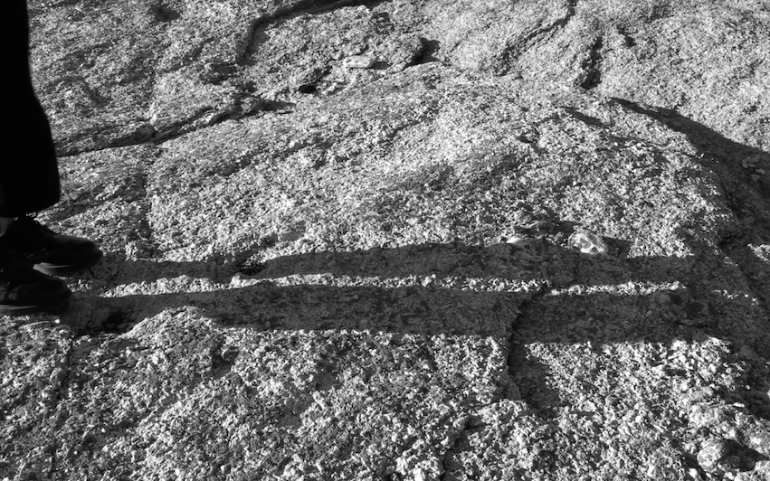

Fermata with
Iman Mohammed
at
Leech
2021
The first collaboration between artist Vera Karlsson and poet Iman Mohammed
Fermata will have Swedish premier at Stockholm Film Festival and a sequel is planned in 2023
<